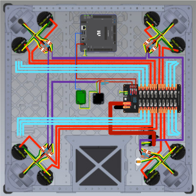

Wiring Cheat Sheet
Note
This document serves as SuperNURDs wiring standards to match or exceed FRC standards.
Important
Based on the 2026 Game Manual
Important
ALL connection points (wire on both sides of a connector) must have labeled zipties indicating FROM DEVICE and TO DEVICE marked with a dividing line. FROM is on top TO on bottom.
Device Connection Details
Standard Components
Power (PDH)
| Device | Wire Gauge | Port | Voltage/Amps |
|---|---|---|---|
| Battery | 4 AWG 1 | Battery Input | 12V |
| Kraken Motors | 10 AWG | Breaker Port (40A üü†) | 12V / 40A |
| Falcon Motors | 10 AWG 8 | Breaker Port (40A üü†) | 12V / 40A |
| roboRIO | 18 AWG 4 | Fuse Port 20 (10A üî¥) | 7V-16V / \~4A |
| VH-109 Radio | 18 AWG 4 POE injector | Fuse Port 21 (10A üî¥) and Radio RIO Port | 4.5V-19V / 0.5A |
| VH-109 Radio - Backup Power | 18 AWG | Breaker Port (20A üü°) | 4.5V-19V / 0.5A |
| CANcoder | 18 AWG 5 | Fuse Port 22 (spliced)6 (10A üî¥) | 6V-16V / 0.06A |
| Pigeon 2.0 | 18 AWG 3 | Fuse Port 22 (spliced)6 (10A üî¥) | 6V‚Äì28V / 0.05A |
| CANdle | 18 AWG | Fuse Port 23 (10A üî¥) | 6V-28V / 6A |
| Limelight | 18 AWG | Breaker Port (20A üü°) | 12V |
Signal
Important
CAN Wires are "Daisy Chained" meaning each device is connected to the next one (think holding hands in one big circle)
Important
All drivetrain devices (motors, CANcoders, and Pigeon) should be on the CANivore CAN chain. All other motors/devices should be on the roboRIO CAN chain.
| Device | Wire | Connects to |
|---|---|---|
| CANivore | USB C to A | RIO USB |
| Pigeon 2.0 | Built in 22 AWG üü¢üü° | CANivore üü¢üü° |
| CANcoder | 18 AWG - 4 Conductor7 | Pigeon Builtin Wire üü¢üü° |
| roboRIO | Ethernet (CAT 5e or better) | Radio RIO Port |
| Limelight | Ethernet (CAT 5e or better) | Radio AUX1/2 Port |
Nonstandard Components (No Longer Used)
| Device | Wire Gauge | PDH Port | Voltage/Amps |
|---|---|---|---|
| Buckboost | 18 AWG 2 | Fuse Port (10A üî¥) | 8V-40V / 3A |
| Brainbox | 18 AWG | Breaker Port (20A üü°) | 5V-30V / 0.1A |
| ❌ ILLEGAL - RPM | 18 AWG 4 | Fuse Port (10A üî¥) | 5V-18V / 1A |
PDH Details
| PDH Port | Quantity | Use |
|---|---|---|
| Fuse Ports | 3 | Control System |
| Fuse Ports (Switchable) | 1 | Code controlled On/Off |
| Breaker Ports | 20 | Motors |
Gauge to Breaker Standard
| Wire Gauge | Breaker Size |
|---|---|
| 10 AWG | 40A üü† Breaker |
| 12 AWG | 40A üü† Breaker |
| 18 AWG | 20A üü° Breaker |
| 22 AWG | 5A Breaker or 10A üî¥ Fuse |
Swerve Diagram

Tips
- When putting multiple wires into one connector (e.g. Kraken CAN Wire) the size becomes Original AWG - 3 (e.g. two 18 AWG - 3 = 15 AWG)